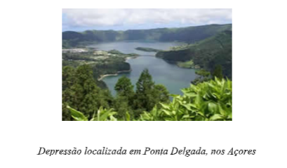
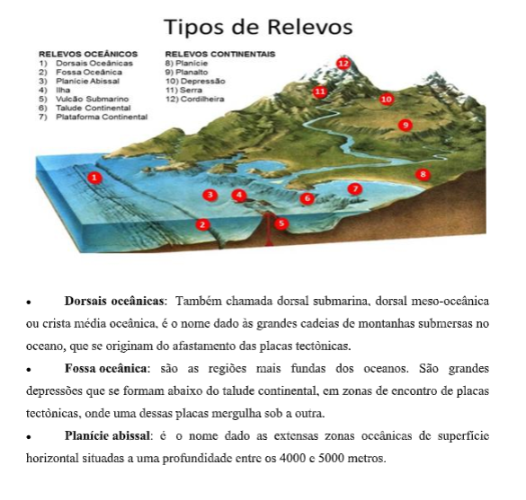
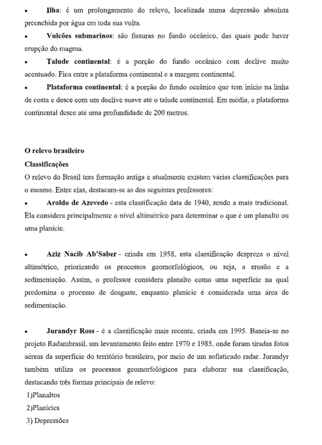
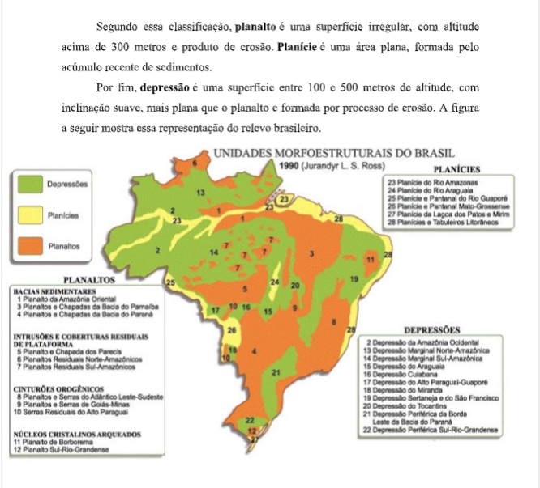
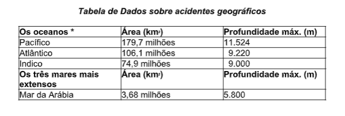
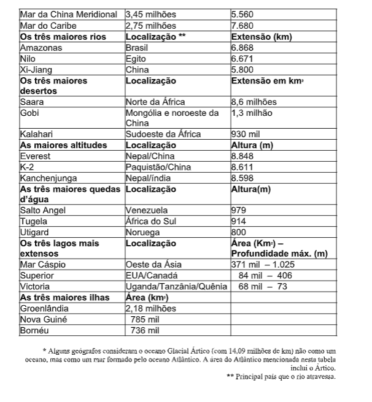

Capítulo 5: A Destruição da Natureza: erosão e poluição do solo por agrotóxico Acelerando a erosão dos solos
Questão: Como o manejo da agricultura contribui para a destruição do meio ambiente e que alternativas podemos criar?
Contextualizando – Indústria Química e a Produção de Defensivos NauraisOs defensivos agrícolas naturais são os produtos originários de partes de, ou compostos extraídos de plantas, microrganismos, animais e minerais. São sistemas em franca expansão que buscam obter vantagens das interações de ocorrência natural, dando ênfase ao manejo das relações biológicas e processos naturais. Estão em contraste ao modelo usual, que usa defensivos químicos para realizar o controle de pragas. Ao dar ênfase ao manejo das relações biológicas e processos naturais, estão em plena consonância com as expectativas dos consumidores que buscam produtos mais saudáveis. Por essa razão, defensivos naturais experimentam um crescimento no Brasil e no mundo, principalmente nas pequenas e médias propriedades agrícolas e na agricultura familiar, mas também já é utilizado em grandes propriedades agrícolas. Dessa forma, o mercado de defensivos naturais, principalmente capitaneado pelo controle biológico, está crescendo cerca de 16% ao ano no mundo. No Brasil esse segmento do agronegócio já representa de 3 a 5% das vendas dos pesticidas químicos e há espaço para continuar crescendo. Esse movimento tem colocado os defensivos agrícolas naturais em discussão, como opção viável para a produção saudável de alimentos.
Fonte: http://www.fao.org/family-farming/detail/fr/c/463387/
Entendemos por erosão, a perda da camada superficial da litosfera, onde existe vida microbiana e que permite o desenvolvimento da vida vegetal. Entre as várias situações em que o homem provoca ou agrava a erosão dos solos, podemos destacar:
- os desmatamentos desordenados;
- as queimadas;
- a desertificação;
- a prática da agricultura;
- os deslizamentos provocados por abertura.
Os DesmatamentosOs países mais atingidos pelos desmatamentos estão localizados na faixa tropical do globo: Brasil, Equador, Colômbia, Guatemala, Haiti, Honduras, Nicarágua, Gana e Nigéria. Além desses, outros países situados na mesma faixa, como Congo, Sri Lanka, Tailândia, Indonésia e Malásia, também são atingidas. Assista ao vídeo e aprenda um pouco mais:
A desertificação
O termo desertificação surgiu na França, no final da década de 1940. A intenção era caracterizar áreas que estavam ficando desérticas, ou mesmo a expansão dos desertos já existentes. A ONU define desertificação como "a degradação das terras nas zonas áridas, semiáridas e subúmidas secas, resultante de fatores diversos, como as variações climáticas e as atividades humanas". Essa definição fez parte da Agenda 21 da ECO-92, realizada no Rio de Janeiro. O mesmo documento determina que, por degradação da terra, se entende: a degradação do solo e dos recursos hídricos; a degradação da vegetação e da biodiversidade; a redução da qualidade de vida. Durante a ECO-92, foi proposta uma Convenção Internacional sobre Desertificação e Seca, que conta com a participação do Brasil. O assunto já vinha sendo discutido desde 1977 pela comunidade internacional. Nesse ano, a ONU realizou a Primeira Conferência Internacional sobre Desertificação, em Nairóbi, no Quênia. Data também dessa época o Primeiro Plano de Ação Mundial de Luta contra a Desertificação. Devido ao fracasso desse plano, a Convenção proposta na ECO-92 tinha força de lei internacional, devendo ser obedecida pelos países signatários. Em 1994, foi assinada em Paris, por160 países, a Convenção Mundial contra a Desertificação. Instituiu-se, na ocasião, 17 de julho (dia da assinatura da Convenção) o Dia Nacional do Combate à Desertificação. A desertificação ocorre em 100 países do mundo, apenas em alguns ecossistemas (clima árido, semiárido e subúmido seco). As terras ocupadas por esses ecossistemas correspondem a mais de37% da superfície do planeta. Abrigam mais de um sexto da população mundial e países com indicadores sociais semelhantes: todos têm nível de renda baixo, baixo padrão tecnológico, baixo nível de escolaridade e consumo de calorias abaixo da média recomendada. Em 1997, realizou-se a primeira reunião da Convenção da Desertificação, em Roma. Na conferência, definiu-se que o fenômeno da desertificação acontece mais em consequência da ação do homem do que por mudanças climáticas. O Brasil sediou, em 1999, outra reunião para debater o assunto. Em Olinda, Pernambuco, representantes de 190 países discutiram o problema. Foram definidas nessa reunião as principais causas e implicações da desertificação.
DESERTIFICAÇÃO
Causas • Uso intensivo do solo para a agricultura. • Fragilidade do ecossistema. • Desmatamentos. • Pecuária extensiva. • Técnicas não apropriadas de irrigação e cultivo. Implicações • Problemas sociais: fome, desnutrição, analfabetismo, diminuição da renda e do consumo. • Migração dos habitantes de áreas secas: pobreza urbana, desestruturação familiar, desemprego. • Destruição da biodiversidade. • Erosão dos solos e formação de areia. • Redução dos recursos hídricos. • Redução das terras cultiváveis.
A desertificação no mundo
Existe um total de 61,3 milhões de quilômetros quadrados de áreas degradadas em todo o mundo. Segundo a ONU, as áreas mais atingidas pela desertificação estão na África, Ásia, América do Norte, Austrália e América do Sul. A Europa é o continente menos atingido, com exceção da Espanha. Veja a tabela.
 Os deslizamentosA camada superficial do solo em terrenos inclinados tem a tendência de deslizar de cima para baixo. A velocidade e a intensidade desse deslizamento vão depender da maior ou menor permeabilidade dos solos e do declive do terreno. O movimento mais lento (rastejamento) desse material costuma formar na base da inclinação um acúmulo de detritos que chamamos de tálus (talude). Quando, por qualquer interferência (humana ou natural), o talude é rompido, toda a encosta vem abaixo. Isso pode acontecer de forma violenta, originando tragédias. O homem pode acelerar o processo ao "cortar" o tálus para abrir estradas, construir casas, etc. Um desmatamento anterior da área contribui para agilizar o processo.
Impactos ambientais causados pela agriculturaA agricultura tem tido há muitos séculos a responsabilidade de fornecer alimentos para a humanidade. Para cumprir esse objetivo, já ocupou mais de um quarto da superfície terrestre. A procura por terras cultiváveis já destruiu cerca de 30% das florestas originais dos continentes. Na verdade, a agricultura causou os primeiros impactos ambientais quando o homem aprendeu a cultivar plantas alimentícias e a criar animais. O crescimento populacional só fez agravar as consequências desses impactos. A modernização do campo e os avanços tecnológicos dos últimos anos precisam ser analisados de ângulos diferentes. Se, de um lado, proporcionaram o aumento da produção de alimentos e a adoção de novas técnicas para a proteção do meio ambiente, de outro, não permitiram a igual distribuição desses benefícios. Além do mais, podemos dizer que a tecnologia que protege também agrava a degradação ambiental. O homem usa técnicas para combater a erosão do solo, mas o polui com o uso de agrotóxicos.
Quando falamos em avanços tecnológicos, não podemos esquecer que a maior parte dos países da Ásia, da África e da América Latina não tem acesso a essas melhorias. Além disso, são países situados nas regiões intertropicais, onde milhões de hectares de savanas, campos e florestas queimam todo ano. Embora as estatísticas mostrem que a produção de alimentos é suficiente para manter a população mundial, a má distribuição e o mau uso das áreas agrícolas são responsáveis pela existência da enorme massa de famintos em muitas partes do mundo. Segundo a FAO (Fundo das Nações Unidas para a Agricultura e Alimentação), essa massa totaliza 786 milhões de pessoas subnutridas. Grande parte das terras ocupadas por atividades agrárias é formada por áreas de solos de baixa fertilidade ou por terrenos acidentados com pouca produtividade. Estima-se que mais de 60% das áreas agrícolas estejam em processo de degradação. Entre os muitos impactos ambientais provocados pela agricultura estão a erosão e a contaminação dos solos por agrotóxicos, que podem atingir lençóis de água subterrânea, rios e lagos.
A erosão dos solos em áreas agrícolasEsse é um problema que ocorre, de modo geral, em todo o mundo, sendo mais intenso na zona tropical, onde está situada a maioria dos países subdesenvolvidos. A camada superficial do solo pode se desagregar nos preparativos para o plantio ou pelo desmatamento, quando há perda da vegetação que ajuda com suas raízes a segurar parte do solo.
Alguns cuidados, entretanto, podem evitar o desgaste dos solos agrícolas. Técnicas de cultivo podem impedir que grande parte do solo das lavouras seja levada pelas águas das chuvas. O uso de plantio em curvas de nível reduz consideravelmente a velocidade do escoamento da água da chuva. E possível utilizar esse sistema em terrenos com pouca inclinação e que permitam o uso de tratores.
 Em países desenvolvidos é muito comum o uso de curvas de nível agricultura.Quando a inclinação do terreno é maior, como em áreas montanhosas, a solução é usar a técnica terraceamento (terraços). Cortes largos nos terrenos dispostos em degraus reduzem a velocidade da água e preservam o solo. Essa técnica é muito utilizada em países populosos da Ásia, porque possibilita um bom aproveitamento do solo. Algumas culturas, como a de café, costumam deixar grandes pedaços de solo expostos à erosão. Costuma-se plantar feijão nesses espaços vagos, para proteger o solo da erosão. Essa técnica é conhecida como associação de culturas.
Além da erosão dos solos, a agricultura trouxe outro grave problema para o meio ambiente. As técnicas agrícolas modernas requerem o uso de vários produtos que, se por um lado facilitam a tarefa do homem do campo, por outro, agridem bastante a natureza. São fertilizantes, pesticidas e herbicidas, conhecidos como agrotóxicos. Esses produtos causam sérios danos à saúde dos trabalhadores rurais, que estão em contato direto com eles, e às pessoas que consomem os alimentos tratados com agrotóxicos. As águas das chuvas carregam resíduos de agrotóxicos das plantações, contaminando as águas subterrâneas, os rios e lagos das proximidades. São responsáveis, também pela contaminação dos solos, tornando-os mais pobres, pois eliminam os micro-organismos responsáveis por sua fertilidade. O uso excessivo de pesticidas faz aparecer pragas mais resistentes, o que torna necessário elevar a potência de ação do produto. A solução encontrada, em alguns lugares, é substituir os fertilizantes químicos pelos adubos orgânicos e fazer o controle biológico, que consiste na introdução de predadores naturais, em lugar dos pesticidas e herbicidas.
Exercícios- Vamos geografar!!!   Extrativismo mineralO extrativismo mineral é caracterizado pela exploração de recursos minerais do subsolo, como o ouro, manganês, diamante, bauxita, minério de ferro, água mineral, petróleo, cobre, cobalto, urânio, prata, entre tantos outros. O extrativismo mineral tem por característica a alteração drástica do ambiente onde é realizado. Tem por fim o uso direto ou indireto. Ele é direto quando, como no caso da água mineral, o produto mineral extraído é utilizado em sua forma natural. É considerado indireto, que é o que ocorre na extração da maioria dos minerais, quando o produto extraído é destinado a indústrias para passar por transformações, que darão origens a produtos com maior valor agregado. A tecnologia de extração também pode variar entre simples e mais complexa.
Por ter um território extenso, o Brasil desfruta de ampla variedade de recursos naturais para utilização interna e comércio externo. No entanto, o país não é autossuficiente em tudo e, em alguns casos, precisa também adquirir tais tipos de produtos. Uma das críticas feitas ao extrativismo mineral no Brasil é de que vendemos o minério para comprar o produto que é com ele fabricado, perdendo deste modo a possibilidade de utilizar o recurso mineral em território nacional para vendê-lo com maior valor agregado.
Pensar geograficamente – Exercícios!
3. Assinale V (Verdadeiro) ou F (Falso):
( ) O ferro é um minério pouco utilizado.
( ) Do cobre e do estanho se produz o bronze.
( ) As maiores reservas de petróleo localizam-se no Oriente Médio.
( ) O tipo de carvão mais utilizado é a hulha.
( ) O petróleo e o carvão são minerais fósseis.
Bom estudo!Referências Bibliográficas
-Mineração na Serra de Carajás. Foto: T photography / Shutterstock.com https://www.sogeografia.com.br/ acesso 13/02/20; 20/02/20; - Fronteiras Geográficas 3º ano médio- Senne. Estáquio ano 2019. Editora: Ática. São Paulo